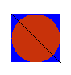

Reminder: You can only use the Internet for Codecheck to check your programs and Canvas to upload
1
Complete application InputForYou. (It will have a main method.) The application will read data from the keyboard and process it
In the main method, ask the user what state he lives in
Ask the user to enter a double
Ask the user to enter an integer
Use these prompts
System.out.print("What state do you live in: ");
System.out.print("Enter a double: ");
System.out.print("Enter an integer: ");
Be sure to use the appropriate type of if statement.
Only create one Scanner
2
Complete the class JupiterFlag which model the shape below. You write the whole class. You are given a tester.

In the constructor, you are given the x, y coordinates of the center of the circle and the radius.
In the draw method, construct a circle with that center and radius. Construct a rectangle that bounds the circle. Fill the rectangle with blue using the predefined color in the Color class. Create a custom color with red = 200, green = 50, and blue = 10. Use it to fill the circle. Draw a line from the upper left of the rectangle to the bottom right.
Fill the rectangle, then the circle, and then draw the line.
HINT: Notice that you are given the center of the circles , but to draw an Ellipse you need to calculate the upper left-hand corner of the bounding rectangle and the diameter. You did this in Lab 4.
3
You are given a class Engine which represents a child's toy train engine that moves on a straight track. At any given time, the Engine is at a specific location. The Engine can move either forwards or backwards by a specified amount. It does not turn around. It can move from 0 to 20 along the track in either direction. The Engine can not go beyond the end of the track. i.e. its position can never be greater than 20 or less than 0. When the Engine is created it is set at a particular location on the track which is specified in the constructor.
Engine can not be placed beyond either end of the track. If the parameter to the constructor is off the track, set the location to 0.moveForward method so that the amountToMove can not move the Engine off the track. If the amountToMove would move the Engine beyond 20, set the location to 20. If the amountToMove is negative, do not move the Engine. moveBackward method so that the amountToMove can not move the Engine off the track. If the amountToMove would move the Engine beyond 0, set the location to 0. If the amountToMove is negative, set the location to 0. Use the appropriate if statements. Do not have "do nothing" if or else clauses.
4
Write a class WaterBottle. A WaterBottle has a capacity of 16.7 fluid ounces.
Define a constant CAPACITY_IN FLUID_OUNCES set to 16.7
When a WaterBottle is constructed, it is full. That means the constructor needs to initialize the current amount using the constant
WaterBottle has these methods:
drink which takes the number of fluid ounces drunk as a double and reduces the current amount by that amount. It has no return valuefill which fills the WaterBottle back to capacity using the constant. It has no return valuegetAmount which returns the current amount in the WaterBottleYou do not need to validate the parameters. You can assume the user never tries to drink when the bottle is empty or to fill it beyond its capacity
Provide Javadoc for the class, the constructor and the methods
There is no starter class for WaterBottle. You will write the whole class yourself, but there is a tester.
5
Write an application (has a main method) called MonetPainting. You will write the whole class.
Do the following:
Picture from the source "monet.jpg"You can look at the documentation of the Picture class in Bluej if you need to.